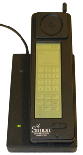

Smartphones
Das erste Smartphone wurde von Bell South und IBM entwickelt.
Dies sah jedoch noch nicht wie ein heute gebreuchliches Smartphone aus.

Nachdem einige Jahre vergangen waren, entwickelte Nokia 1998 das erste kleine Smartphone.
Dieses hatte noch Tasten und nutzte das Symbian-Plattform.
Diese Plattform hatte bis 2006 eine Marktanteil von 73%.
Der Markt wurde durch das erste I Phone revolutioniert.
Auch Samsung und Nokia zogen nach, jedoch überlebten nur Apple Samsung auf dem Markt.
Heutzutage sind auch LG, Windows und Huawai populär am Markt.
Mehr erfährst du hier
zurück zur Startseite
Nach Oben